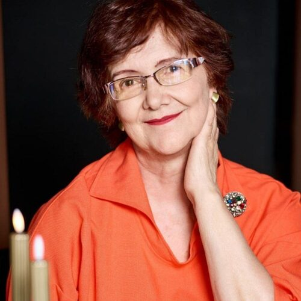
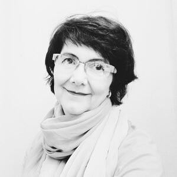

Помогаю принимать эффективные решения людям и бизнесу
с помощью данных и точных алгоритмов.
Я автоматизировала учёт и финансы на крупных российских предприятиях: цифры, себестоимость, прибыль, баланс. От разработки бизнес-методологии до автоматизации, внедрения и сопровождения информационных решений.

Один и тот же поиск, разные углы
«По образованию математик. Всю жизнь ищу правильную систему отсчёта — точку, из которой картина складывается в целое».
«Я меняла бизнес — за счёт автоматизации, за счёт того, что цифры становились очевидными, управленческие решения принимались как само собой разумеющиеся».
«Я переводила сложность в цифры — а теперь перевожу её в слова. Это всё тот же поиск алгоритма: как донести мысль без искажений и без потерь».
«Вижу детали, не теряя сути. Материальные потоки — это факт, деятельность предприятия. А себестоимость — его интерпретация: она зависит от правил, и посчитать можно по-разному, в зависимости от целей. Так картина становится объёмной».
«Крупное предприятие задаёт другой взгляд на систему: разнопрофильные производства внутри одного холдинга, где нельзя упрощать в угоду скорости расчётов. Маленькая команда — поэтому мы были вынуждены делать по-настоящему эффективные решения. Систему эксплуатируют много лет — значит, она устойчива к изменениям».

«Верю, что люди созданы для осмысления, а не для рутины. Преобразую эту веру в реальные изменения бизнеса».
Примеры из опыта
От методологии до результата: разработка, внедрение, управление процессами и командой, сопровождение
Разработка методики расчёта себестоимости и калькулирования продукции, внедрение и сопровождение автоматизированной системы CE2Ora.
Разработка типового решения по интеграции подсистемы «Бухгалтерский и налоговый учёт» с подсистемами КИС (на базе SAP), адаптация для Балаковской АЭС, Ростовской АЭС и центрального аппарата, внедрение и сопровождение.
Разработка интеграционной модели для формирования отчётности в CE2Ora на базе данных, введённых в SAP ERP, внедрение и сопровождение.